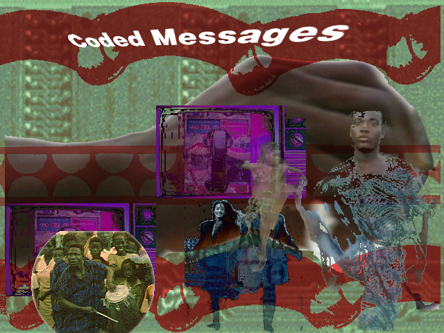
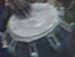
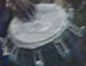

?
?hardest
chains
to
cast
off
are
the
normal
ones
in the know?
| "Whatever one does, one can only respond to the system in
its own terms, according to its own rules, answering it with its own
signs." --- Jean Baudrillard * |
 |
| Click around to find the different codes. When you fall off the edge, click "Back" to return. |
|
Can you read ? |
the hardest chains to cast off are the normal ones |
|||||
| Who is speaking? | Who is being spoken to? | |||||
| Do you get the message? | ||||||
| Everyday, all over the world, coded messages are being sent | ||||||
|
with drums, through advertising. Are you
in the know? | ||||||
 

© Copyright 1995-7 by
Andruid Kerne, Mel Lang, and Francis Kofi.
All rights reserved.
Email inquiries to
chains@ecologylab.net.